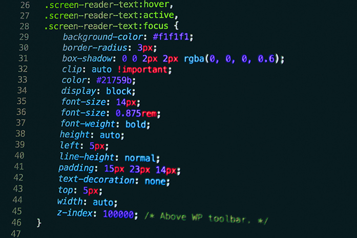

O que é CSS?
CSS é a sigla para o termo em inglês Cascading Style Sheets, que traduzido para o português significa Folha de Estilo em Cascatas. O CSS é fácil de aprender e entender e é facilmente utilizado com as linguagens de marcação HTML ou XHTML. Mas o que realmente isso quer dizer? O que é CSS além da sigla?
CSS é uma linguagem de folha de estilos, que tem o papel de tornar uma página apresentável na web, relacionada diretamente com o design e aparência. Ou seja, o CSS é uma camada que se usa para controlar o estilo da sua página da web. Para entender o que é CSS pense na decoração da sua página. Utilizando o CSS é possível alterar a cor do texto e do fundo, fonte, espaçamento entre parágrafos, criar tabelas, usar variações de layouts, ajustar imagens para suas respectivas telas e assim por diante. Podemos dizer que toda a parte visual da sua página será definida com o CSS. O CSS ilustra como os elementos em HTML de um site devem ser apresentados nas telas. De uma forma direta, é o CSS que determina o visual do seu site. Desde o tamanho da fonte até a imagem de fundo, tudo pode ser alterado com o CSS. Por que cascata? O termo dá-se por causa do método de utilização. É possível usar vários documentos CSS a fim de de se compor o visual da página, cada um com uma regra diferente.